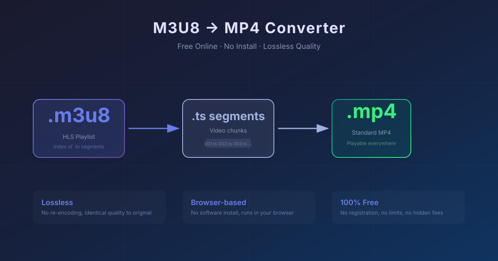

M3U8 to MP4 Converter — 100% Free Online, No Install
Published: May 2026 | Reading time: 4 min

The Easiest Way to Convert M3U8 to MP4
You have an M3U8 link and you want an MP4 file. Most solutions tell you to install FFmpeg, run command lines, or buy expensive software. There's a simpler way.
Our free online M3U8 player and downloader lets you download the video from any M3U8 link. Combine that with a quick FFmpeg command, and you get an MP4 file in under a minute — no expensive software, no registration.
Method 1: Download Then Convert (Recommended — Best Quality)
- Get your M3U8 link — Use browser DevTools (F12 → Network → filter "m3u8") to find the playlist URL. See our M3U8 finding guide for detailed steps.
- Download the video — Paste the M3U8 URL into our online player and click Download. You'll get a merged TS video file.
- Convert TS to MP4 — Run this single FFmpeg command (takes 5 seconds, lossless):
ffmpeg -i "video.ts" -c copy -bsf:a aac_adtstoasc "video.mp4" - Done — You now have a standard MP4 file playable on any device.
Method 2: Online Player (No Download Required)
If you don't need an MP4 file and just want to watch the video, paste the M3U8 link into our online player and click Play. The video streams instantly in your browser using HLS.js. No files, no conversion, no waiting.
Why Most "M3U8 to MP4 Online Converters" Don't Work
You've probably seen sites claiming to convert M3U8 to MP4 entirely online. Here's the truth:
- Server cost problem — Converting video on a server requires massive CPU/GPU power. No free service can afford to do real server-side transcoding at scale.
- They just rename files — Many "converters" simply download the TS file and rename it to .mp4, which doesn't actually convert the format.
- They upsell you — "Free" converters often let you convert 30 seconds, then demand payment for the full video.
Our approach is honest: we provide a free downloader that gets you the video file, plus a free FFmpeg guide for the actual conversion. You maintain full control and quality.
FFmpeg vs Online Converters: Why FFmpeg Wins
| Feature | FFmpeg (Our Method) | Online Converter |
|---|---|---|
| File size limit | No limit | Usually 100MB–500MB |
| Conversion speed | Seconds (lossless copy) | Minutes (re-encoding) |
| Video quality | Original quality | Often compressed |
| Privacy | Local processing | Video uploaded to their server |
| Cost | Free forever | Freemium or paid |
No FFmpeg? Use a GUI Tool Instead
If command lines aren't your thing, these free tools do the same TS→MP4 conversion with a graphical interface:
- HandBrake — Free, open-source, works on Windows/Mac/Linux
- Shutter Encoder — Free, based on FFmpeg, supports batch conversion
- LosslessCut — Free, specializes in lossless trimming and format switching
FAQ
Can I convert M3U8 directly to MP4 without downloading?
Not without server-side transcoding, which no free service offers at scale. The download-then-convert method is the only reliable free approach.
Why does my downloaded file have no video or audio?
Some M3U8 streams use separate audio and video tracks. Our troubleshooting guide covers how to handle these cases.
Is this legal?
Downloading videos for personal use is generally acceptable. Redistributing copyrighted content is not. Always respect the content owner's terms of service.